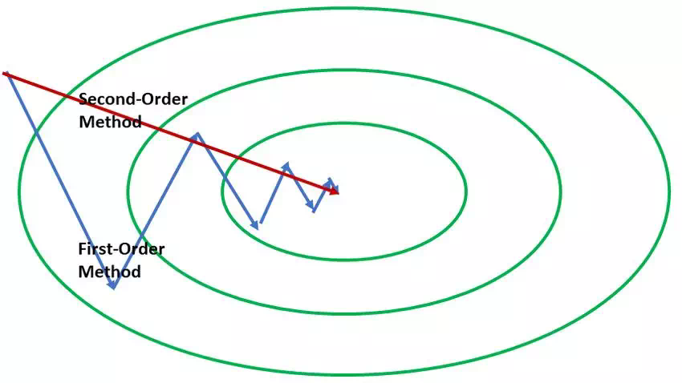
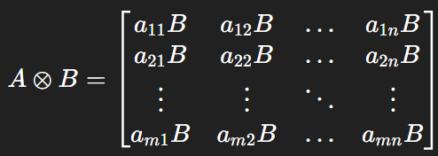

Adam（Adaptive Moment Estimation）
Adam是一种自适应地优化算法，结合了Momentum和RMSProp的特点，在优化过程中自适应地调整优化的学习率，其组成部分主要分为一阶矩估计和二阶矩估计。
一阶矩估计表示为m t m_t m t
m t = β 1 m t − 1 + ( 1 − β 1 ) ∇ θ t L ( θ t ) m_t=\beta_1m_{t-1}+(1-\beta_1)\nabla_{\theta_t}L(\theta_t)
m t = β 1 m t − 1 + ( 1 − β 1 ) ∇ θ t L ( θ t )
二阶矩估计表示为v t v_t v t
v t = β 2 v t − 1 + ( 1 − β 2 ) [ ∇ θ t L ( θ t ) ] 2 v_t=\beta_2v_{t-1}+(1-\beta_2)[\nabla_{\theta_t}L(\theta_t)]^2
v t = β 2 v t − 1 + ( 1 − β 2 ) [ ∇ θ t L ( θ t ) ] 2
其中，∇ θ t L ( θ t ) \nabla_{\theta_t}L(\theta_t) ∇ θ t L ( θ t ) β 1 \beta_1 β 1 β 2 \beta_2 β 2 0.9 0.9 0.9 0.999 0.999 0.999 m t m_t m t v t v_t v t m t ^ = m t 1 − β 1 t \hat{m_t}=\frac{m_t}{1-\beta_1^t} m t ^ = 1 − β 1 t m t v t ^ = v t 1 − β 2 t \hat{v_t}=\frac{v_t}{1-\beta_2^t} v t ^ = 1 − β 2 t v t η \eta η
θ t + 1 = θ t − η v t ^ + ϵ m t ^ \theta_{t+1}=\theta_t-\frac{\eta}{\sqrt{\hat{v_t}}+\epsilon}\hat{m_t}
θ t + 1 = θ t − v t ^ + ϵ η m t ^
在优化过程中，一阶矩我们称为动量项，它通过累计加权累计历史梯度，从而表示一个平均的梯度方向，这个梯度方向象征了一个好的优化倾向。例如参数维度为3，每一个epoch如果都向梯度方向[ 1 , 1 , 1 ] [1,1,1] [ 1 , 1 , 1 ] [ 1 , 1 , 1 ] [1,1,1] [ 1 , 1 , 1 ]
而二阶矩对历史梯度的平方和进行累计，反映了梯度大小的累积幅度。如果以往的梯度累积幅度过大，说明该方向变化快或者敏感，如果每次按梯度原值更新，容易“跳过最优点”，此时则需要基于二阶矩减小学习率，使优化过程更为稳定。
Adam结合了一阶矩和二阶矩，实现了自适应学习率，对于那些不经常更新的参数，会给予更大的学习率，很好地处理了稀疏问题。且相比于SGD需要精心选择学习率和动量参数，Adam无需手动调整太多学习率参数，在大多数情况下对超参数（尤其是学习率）的选择不那么敏感，通常默认参数就能取得不错的效果。
在实际应用中，通常β 1 \beta_1 β 1 β 2 \beta_2 β 2 v t v_t v t m t m_t m t E [ g t ] E[g_t] E [ g t ]
AdamW
由于在深度学习模型特别是大模型中，模型通常有大量的参数。如果模型参数过多且训练数据不足，模型就可能过度学习训练数据中的噪声和特有模式，而不是学习到数据的普遍规律。这导致模型过拟合。过拟合的模型往往具有非常大或非常小的权重，因为这些大权重使得模型对训练数据中的微小变化过于敏感，而 Weight decay 的目标就是抑制这种大权重的出现。
而在原始的Adam中，Weight decay的实现是在损失中加上正则化项g t = ∇ θ t L ( θ t ) + λ θ t g_t=\nabla_{\theta_t}L(\theta_t)+\lambda\theta_t g t = ∇ θ t L ( θ t ) + λ θ t
AdamW的做法则是，将这一项移出了梯度缩放部分：
θ t + 1 = θ t − η v t ^ + ϵ m t ^ − η λ θ t \theta_{t+1}=\theta_t-\frac{\eta}{\sqrt{\hat{v_t}}+\epsilon}\hat{m_t} - \eta\lambda\theta_t
θ t + 1 = θ t − v t ^ + ϵ η m t ^ − η λ θ t
新增项− η λ θ t -\eta\lambda\theta_t − η λ θ t θ t \theta_t θ t η \eta η
一阶梯度与二阶梯度
不论是Adam、AdamW、SGD+Momentum，这些方法都是基于一阶梯度进行的优化计算，根据一阶梯度来确定优化方向。而一阶梯度如同山坡的坡度一般，是有变化的，即逐渐变陡或变缓。当前坡度信息无法预测这种变化，根据当前坡度来确定步子大小就会产生一些问题。
拿一个二维的目标函数为例，其表达式为L ( x , y ) = 100 x 2 + y 2 L(x,y)=100x^2+y^2 L ( x , y ) = 100 x 2 + y 2 [ 200 x , 2 y ] [200x, 2y] [ 200 x , 2 y ] [ 200 , 2 ] [200, 2] [ 200 , 2 ] x t , y t x_t, y_t x t , y t x t + 1 = x t − 200 η x t x_{t+1}=x_t - 200 \eta x_t x t + 1 = x t − 200 η x t y t + 1 = y t − 2 η y t y_{t+1}=y_t - 2 \eta y_t y t + 1 = y t − 2 η y t η = 0.01 \eta=0.01 η = 0.01 x t + 1 = − x t x_{t+1}=-x_t x t + 1 = − x t y t + 1 = 0.98 y t y_{t+1}=0.98y_t y t + 1 = 0.98 y t x x x y y y

而如果我们能够引入二阶梯度信息，相当于得到了坡度的变化信息，可以利用二阶梯度的信息来提升优化性能。比如经典牛顿法：θ t + 1 = θ t − η H − 1 g \theta_{t+1} = \theta_t - \eta H^{-1}g θ t + 1 = θ t − η H − 1 g H H H H = Q Λ Q T H=Q \Lambda Q^T H = Q Λ Q T Q Q Q q i q_i q i Λ \Lambda Λ λ i \lambda_i λ i θ t + 1 = θ t − η Q Λ − 1 Q T g \theta_{t+1} = \theta_t - \eta Q \Lambda^{-1} Q^T g θ t + 1 = θ t − η Q Λ − 1 Q T g
PS：这里简单说明一下，给定一个方向向量v v v v T H v v^THv v T H v v v v q i q_i q i v T H v = q i T H q i = q i T ( λ i q i ) = λ i ( q i T q i ) = λ i v^THv=q_i^THq_i=q_i^T(\lambda_iq_i)=\lambda_i(q_i^Tq_i)=\lambda_i v T H v = q i T H q i = q i T ( λ i q i ) = λ i ( q i T q i ) = λ i λ i \lambda_i λ i q i q_i q i
回到式子θ t + 1 = θ t − η Q Λ − 1 Q T g \theta_{t+1} = \theta_t - \eta Q \Lambda^{-1} Q^T g θ t + 1 = θ t − η Q Λ − 1 Q T g Q T g Q^Tg Q T g Λ − 1 \Lambda^{-1} Λ − 1 Q Q Q
虽然基于二阶梯度进行优化的方法收敛性很好，但是其计算量限制了实际的应用。每次梯度更新的时候都会带来平方级别的空间复杂度和立方级别的时间复杂度，因此这些方法在现在的深度学习优化方法中并不常见。可以由上述内容得知，如果在深度学习中要应用类似于牛顿法的方法，对Hessian矩阵做比较大的简化假设，比如对角矩阵或者低秩矩阵。
Shamppo
Google Research在2018年提出了一种名为Shamppo的高效近似二阶优化算法，其目标为利用二阶信息加速收敛，同时避免 Hessian 维度太大带来的计算负担，其核心思想是不直接计算或储存 Hessian，而是利用参数张量的结构（例如矩阵、卷积核等的维度）来做 Kronecker 分解近似。
在简述Shamppo原理之前，需要简单介绍两个东西（省去一些复杂的推导，有兴趣可自己搜索查看）：
Kronecker分解
Kronecker分解思想可以简单概述如下：对于一个大方阵H ∈ R m n × m n H \in \mathbb{R}^{mn \times mn} H ∈ R mn × mn A ∈ R m × m A \in \mathbb{R}^{m \times m} A ∈ R m × m B ∈ R n × n B \in \mathbb{R}^{n \times n} B ∈ R n × n H ≈ A ⨂ B H \approx A \bigotimes B H ≈ A ⨂ B A A A B B B H H H ⨂ \bigotimes ⨂

这样进行分解后，矩阵的存储量从原始的( m n ) 2 (mn)^2 ( mn ) 2 m 2 + n 2 m^2 + n^2 m 2 + n 2 H − 1 ≈ A − 1 ⨂ B − 1 H^{-1} \approx A^{-1} \bigotimes B^{-1} H − 1 ≈ A − 1 ⨂ B − 1
Adagrad/Adam/RMSProp 与 Hessian
现有的Adagrad/Adam/RMSProp只是利用历史梯度平方的累积来近似 Hessian 的对角线元素，为什么这么说呢？由泰勒展开式可以得知：f ( θ ) ≈ f ( θ ∗ ) + 1 2 H ( θ − θ ∗ ) 2 f(\theta) \approx f(\theta^*)+\frac{1}{2}H(\theta-\theta^*)^2 f ( θ ) ≈ f ( θ ∗ ) + 2 1 H ( θ − θ ∗ ) 2 g = ∂ f ∂ θ = H ( θ − θ ∗ ) g = \frac{\partial{f}}{\partial{\theta}}=H(\theta-\theta^*) g = ∂ θ ∂ f = H ( θ − θ ∗ ) g 2 = H 2 ( θ − θ ∗ ) 2 g^2 = H^2(\theta-\theta^*)^2 g 2 = H 2 ( θ − θ ∗ ) 2 E [ g 2 ] = H 2 E [ ( θ − θ ∗ ) 2 ] E[g^2] = H^2E[(\theta-\theta^*)^2] E [ g 2 ] = H 2 E [( θ − θ ∗ ) 2 ]
如果训练过程中的参数θ \theta θ ( θ − θ ∗ ) 2 (\theta-\theta^*)^2 ( θ − θ ∗ ) 2 E [ g 2 ] ∝ H 2 E[g^2] \propto H^2 E [ g 2 ] ∝ H 2
在多维场景下，则需要假设各维度独立（即不同维度之间的协方差很小），则可以得到：E [ g i 2 ] ∝ H i i 2 E[g_i^2] \propto H_{ii}^2 E [ g i 2 ] ∝ H ii 2 δ θ = − H − 1 g \delta\theta = -H^{-1}g δ θ = − H − 1 g δ θ = − 1 H i i g \delta\theta = -\frac{1}{H_{ii}}g δ θ = − H ii 1 g
此处博客从Hessian近似看自适应学习率优化器 中进行了相应的推导，最终的结论是“Hessian近似是梯度外积的平方根”，同时指出Adagrad最开始提出的实际就是累加梯度外积g g T gg^T g g T g ⊙ g g⊙g g ⊙ g
Shamppo Optimizer
在Shamppo中，假设模型某层权重参数矩阵为W ∈ R m × n W \in \mathbb{R}^{m \times n} W ∈ R m × n m m m n n n G t = δ t x t T G_t = \delta_tx_t^T G t = δ t x t T x t ∈ R n x_t \in \mathbb{R}^n x t ∈ R n δ t ∈ R m \delta_t \in \mathbb{R}^m δ t ∈ R m
v e c ( G t ) = x t ⨂ δ t vec(G_t) = x_t \bigotimes \delta_t
v ec ( G t ) = x t ⨂ δ t
那么有：E [ v e c ( G t ) v e c ( G t ) T ] = E [ ( x t x t T ) ⨂ ( δ t δ t T ) ] E[vec(G_t)vec(G_t)^T] = E[(x_tx_t^T) \bigotimes (\delta_t \delta_t^T)] E [ v ec ( G t ) v ec ( G t ) T ] = E [( x t x t T ) ⨂ ( δ t δ t T )]
令R t = E [ x t x t T ] R_t =E[x_tx_t^T] R t = E [ x t x t T ] L t = E [ δ t δ t T ] L_t=E[\delta_t\delta_t^T] L t = E [ δ t δ t T ] H t 2 ≈ R t ⨂ L t H_t^2 \approx R_t \bigotimes L_t H t 2 ≈ R t ⨂ L t L t ≈ 1 t ∑ τ = 1 t G τ G τ T ∈ R m × m L_t \approx \frac{1}{t} \sum_{\tau = 1}^t G_{\tau}G_{\tau}^T \in \mathbb{R}^{m \times m} L t ≈ t 1 ∑ τ = 1 t G τ G τ T ∈ R m × m R t ≈ 1 t ∑ τ = 1 t G τ T G τ ∈ R n × n R_t \approx \frac{1}{t} \sum_{\tau = 1}^t G_{\tau}^TG_{\tau} \in \mathbb{R}^{n \times n} R t ≈ t 1 ∑ τ = 1 t G τ T G τ ∈ R n × n 1 t \frac{1}{t} t 1 L t ∝ ∑ τ = 1 t G τ G τ T ∈ R m × m L_t \propto \sum_{\tau = 1}^t G_{\tau}G_{\tau}^T \in \mathbb{R}^{m \times m} L t ∝ ∑ τ = 1 t G τ G τ T ∈ R m × m R t ∝ ∑ τ = 1 t G τ T G τ ∈ R n × n R_t \propto \sum_{\tau = 1}^t G_{\tau}^TG_{\tau} \in \mathbb{R}^{n \times n} R t ∝ ∑ τ = 1 t G τ T G τ ∈ R n × n
有了Hessian的近似表达后，我们可以进一步推导得到：H t ≈ R t − 1 / 2 ⨂ L t − 1 / 2 H_t \approx R_t^{- 1/2} \bigotimes L_t^{- 1/2} H t ≈ R t − 1/2 ⨂ L t − 1/2 θ t − η H t − 1 / 2 g t \theta_t - \eta H_t^{- 1/2}g_t θ t − η H t − 1/2 g t θ t + 1 = θ t − η L t − 1 / 4 G t R t − 1 / 4 \theta_{t+1} = \theta_t - \eta L_t^{-1/4}G_tR_t^{-1/4} θ t + 1 = θ t − η L t − 1/4 G t R t − 1/4
在实际应用中，R t R_t R t L t L_t L t
L t + 1 = β L t + G t + 1 G t + 1 T L_{t+1} = \beta L_t + G_{t+1}G_{t+1}^T
L t + 1 = β L t + G t + 1 G t + 1 T
R t + 1 = β R t + G t + 1 T G t + 1 R_{t+1} = \beta R_t + G_{t+1}^TG_{t+1}
R t + 1 = β R t + G t + 1 T G t + 1
Shamppo中，默认β \beta β
Shamppo算法距离实际应用还有几个难点：
预条件子的计算和存储的巨大消耗；
L L L R R R 神经网络加速器通常是定制的，其加速器设计倾向于低精度（8bit/16bit），能够满足现有的方案。而Shamppo需要双精度运算，因此已有的加速器甚至都不会启动。现有深度学习库提供的最优化器 API 适应于一阶梯度下降模式。而二阶优化器需要与训练循环做交互，因此从实现上需要对框架底层做出修正。Google在后续的工作中提出了相应的算法和组件上的优化，使得Shamppo二阶优化器在大模型上成功work。
Muon（MomentUm Orthogonalized by Newton-schulz）
对于矩阵参数W ∈ R m × n W \in \mathbb{R}^{m \times n} W ∈ R m × n
M t = β M t − 1 + G t M_t = \beta M_{t-1} + G_t
M t = β M t − 1 + G t
W t = W t − 1 − η [ m s i g n ( M t ) + λ W t − 1 ] W_t = W_{t-1} - \eta [msign(M_t) + \lambda W_{t-1}]
W t = W t − 1 − η [ m s i g n ( M t ) + λ W t − 1 ]
其中，m s i g n msign m s i g n S V D ( M ) = U Σ V T SVD(M)= U\Sigma V^T S V D ( M ) = U Σ V T m s i g n ( M ) = U [ : , : r ] V [ : , : r ] T msign(M) = U_{[:,:r]}V_{[:,:r]}^T m s i g n ( M ) = U [ : , : r ] V [ : , : r ] T r r r M M M M M M V V V U U U Σ \Sigma Σ
而对于m s i g n msign m s i g n
苏神这篇博客写得很深入，推荐去阅读：Muon优化器赏析：从向量到矩阵的本质跨越 ，其中谈到，像Adagrad、RMSprop、Adam等自适应学习率优化器主要有两个特点：
损失函数的常数缩放不影响优化轨迹；
每个参数分量的更新幅度尽可能一致。而Muon则满足这两点要求：
假设进行SVD，损失函数乘以λ \lambda λ M M M λ \lambda λ Σ \Sigma Σ λ \lambda λ Σ \Sigma Σ
Muon的“各向同性“也起到了同步更新幅度的作用。
实际应用中，如果每一步都对M M M m s i g n ( M ) msign(M) m s i g n ( M ) m s i g n ( M ) = ( M M T ) − 1 / 2 M = M ( M T M ) − 1 / 2 msign(M) = (MM^T)^{-1/2}M = M(M^TM)^{-1/2} m s i g n ( M ) = ( M M T ) − 1/2 M = M ( M T M ) − 1/2 ( M T M ) − 1 / 2 (M^TM)^{-1/2} ( M T M ) − 1/2 M T M = I M^TM=I M T M = I m s i g n ( M ) ≈ 8 15 M − 5 4 M ( M T M ) + 3 8 M ( M T M ) 2 msign(M) \approx \frac{8}{15} M - \frac{5}{4}M(M^TM) + \frac{3}{8}M(M^TM)^2 m s i g n ( M ) ≈ 15 8 M − 4 5 M ( M T M ) + 8 3 M ( M T M ) 2 X t X_t X t m s i g n ( M ) msign(M) m s i g n ( M ) X t + 1 ≈ 8 15 X t − 5 4 X t ( X t T X t ) + 3 8 X t ( X t T X t ) 2 X_{t+1} \approx \frac{8}{15} X_t - \frac{5}{4}X_t(X_t^TX_t) + \frac{3}{8}X_t(X_t^TX_t)^2 X t + 1 ≈ 15 8 X t − 4 5 X t ( X t T X t ) + 8 3 X t ( X t T X t ) 2
Muon和Shamppo之间的联系
Shamppo中也涉及到了一部分矩阵的幂运算，而不是采用Newton-schulz迭代这类迭代算法，而是采用SVD进行运算，这样会相比之下产生更多的计算量，因此Shamppo中R t R_t R t L t L_t L t β = 0 \beta = 0 β = 0 ( G G T ) − 1 / 4 G ( G T G ) − 1 / 4 = m s i g n ( G ) (GG^T)^{-1/4}G(G^TG)^{-1/4} = msign(G) ( G G T ) − 1/4 G ( G T G ) − 1/4 = m s i g n ( G )
PS：感觉有部分地方还是有点半知半解，后续还是要持续学习(˘•ω•˘)。
参考资料